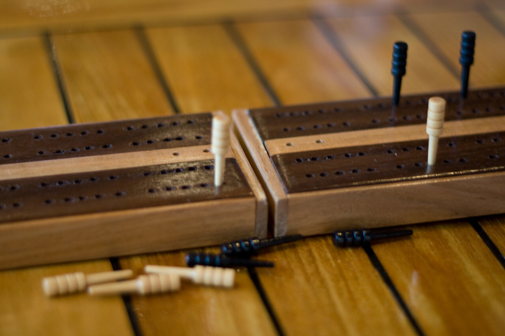
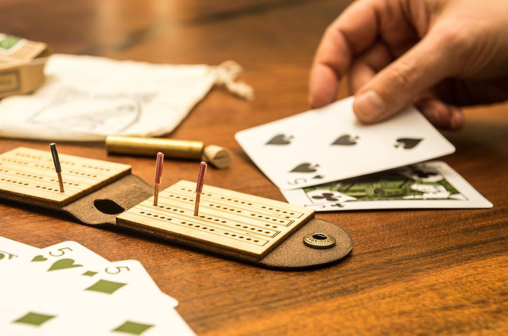
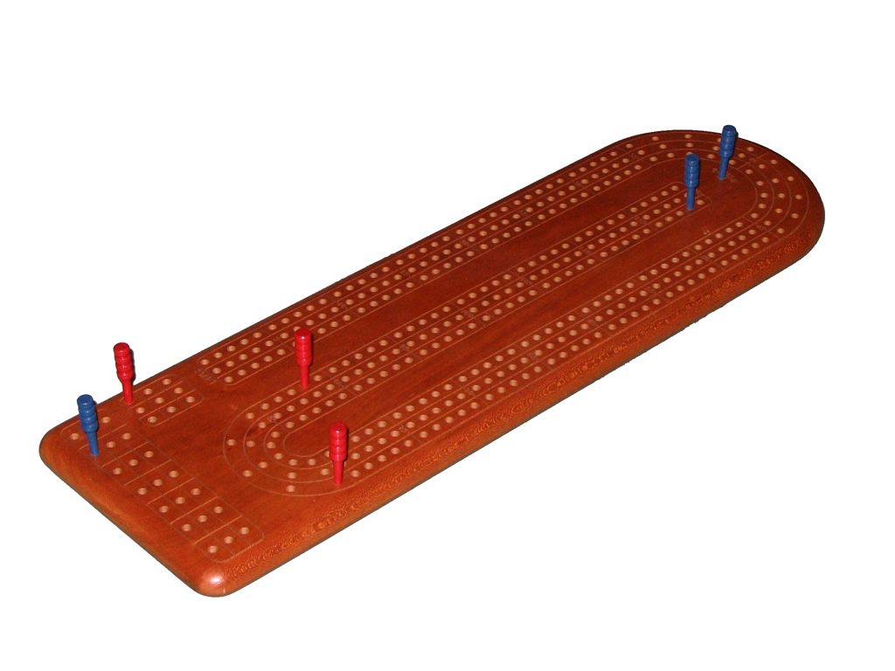
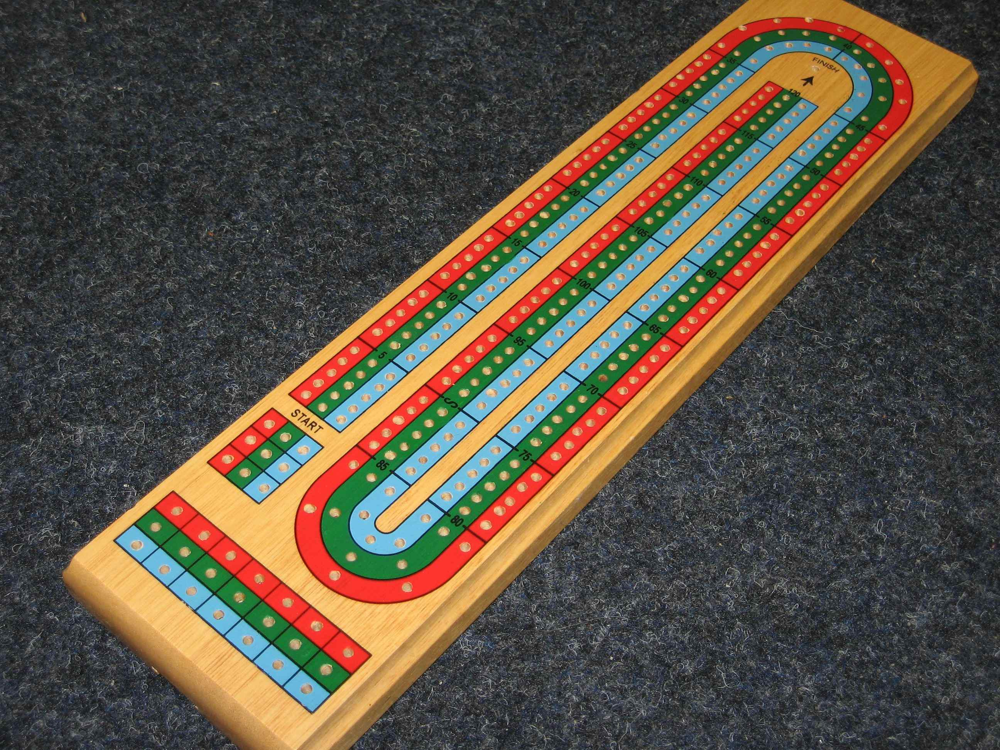
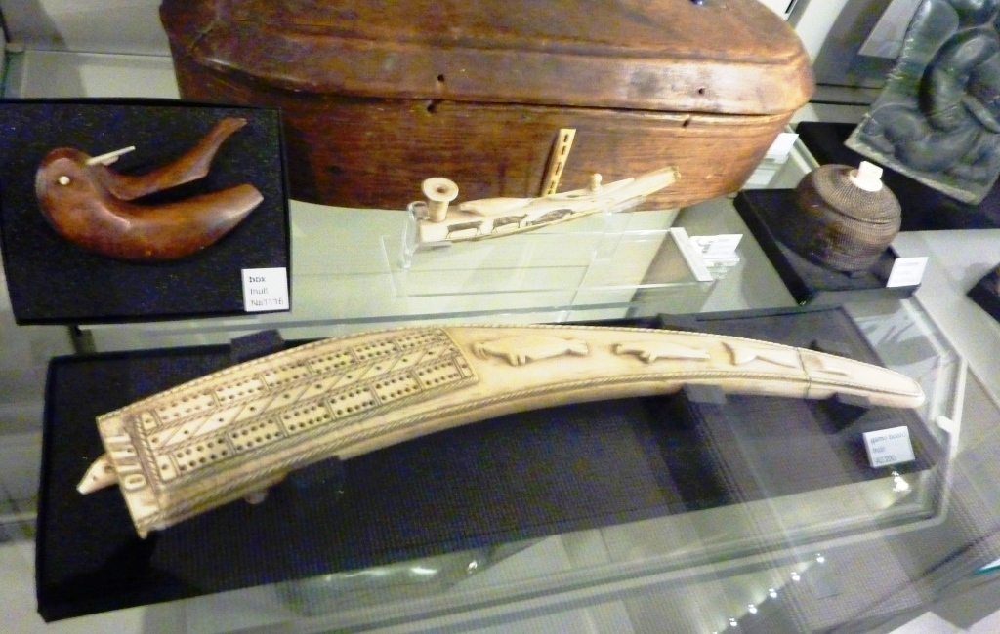

Un jeu de cartes légendaire! 🃏
Invalid Date


Le cribbage a donné plusieurs expressions à la langue anglaise :
| Expression | Signification |
|---|---|
| “Level pegging” | Être à égalité 🤝 |
| “Streets ahead” | Avoir une grande avance 🏃 |
| “Pegged out” | Être épuisé (ou avoir terminé!) 😴 |
| “Turn-up for the books” | Une belle surprise! 🎉 |
En anglais, quand quelqu’un dit qu’il est “pegged out”, ça vient du cribbage!

| Carte | Valeur |
|---|---|
| As | 1 point |
| 2 à 10 | Valeur du chiffre |
| Valet, Dame, Roi | 10 points |
But du jeu : Être le premier à atteindre 121 points! 🏁

| Joueur | Carte | Total |
|---|---|---|
| A | Roi ♠ | 10 |
| B | 6 ♥ | 16 |
| A | Roi ♦ | 26 |
| B | « Go! » | — |
| A | 2 ♣ | 28 |
| A | 2 ♠ | 30 |
A marque 3 pts (paire de 2 + dernier carte)
On peut marquer des points à chaque carte jouée :
| Combinaison | Points | Exemple |
|---|---|---|
| Total = 15 | 2 pts | 7 + 8 = 15 ✌️ |
| Total = 31 | 2 pts | Bravo, pile 31! 🎯 |
| Paire (même rang) | 2 pts | 8 puis 8 👯 |
| Paire royale (3 identiques) | 6 pts | 8, 8, 8! 🤩 |
| Double paire royale (4 identiques) | 12 pts | Jackpot! 💰 |
| Suite (3+ cartes consécutives) | 1 pt/carte | 5, 6, 7 = 3 pts 📈 |
| Dernière carte jouée | 1 pt | Bonus de fin! 🎁 |
Après le jeu, on compte les points de nos 4 cartes + la carte de départ :
⚠️ L’ordre de comptage est important! Non-donneur compte en premier, puis le donneur, puis le crib.
Imaginons ta main : 7♠ 8♥ 8♦ Roi♣ et la carte de départ est 9♣
4 + 2 + 6 = 12 points! 🎉
C’est comme un casse-tête mathématique! Il faut trouver TOUTES les combinaisons! 🧩
En tournoi, une partie typique dure entre 7 et 10 manches de distribution.
| Moment | Combinaison | Points |
|---|---|---|
| Donne | Valet retourné (his heels) | 2 |
| Jeu | Total = 15 | 2 |
| Jeu | Total = 31 | 2 |
| Jeu | Paire | 2 |
| Jeu | Paire royale (3) | 6 |
| Jeu | Double paire royale (4) | 12 |
| Jeu | Suite (3+) | nb de cartes |
| Jeu | Dernière carte (Go) | 1 |
| Décompte | Combinaison de 15 | 2 |
| Décompte | Paire | 2 |
| Décompte | Suite (3+) | nb de cartes |
| Décompte | Couleur (4 cartes) | 4 |
| Décompte | Couleur (5 cartes) | 5 |
| Décompte | Son valet (His Nobs) | 1 |
Mon père et mon grand-père m’ont appris à jouer au cribbage pour pratiquer mon calcul mental et ma vitesse d’évaluation.
. . .
C’est un jeu qui est joué beaucoup chez les Tremblay du Lac-St-Jean, de génération en génération.
. . .
Le cribbage, c’est plus qu’un jeu de cartes — c’est un moment en famille où on apprend les maths en s’amusant! 🧮❤️

. . .
Conseil de pro
Si tu veux commencer à jouer, souviens-toi :
Le 5 est ton meilleur ami et le 15 est ton chiffre magique! ✨
. . .
Qui veut jouer une partie? 🃏
Le Cribbage — Louis Lafortune — Avril 2026